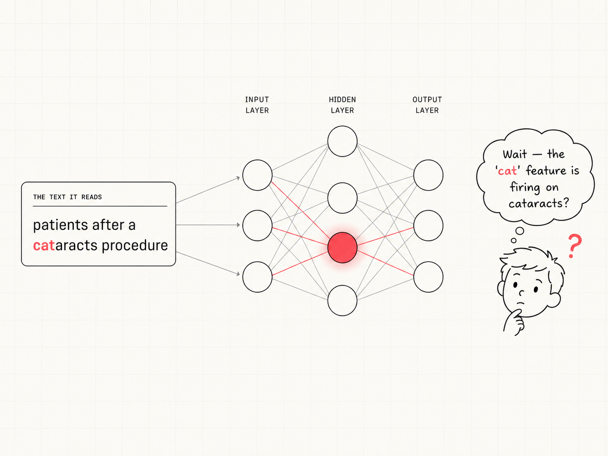
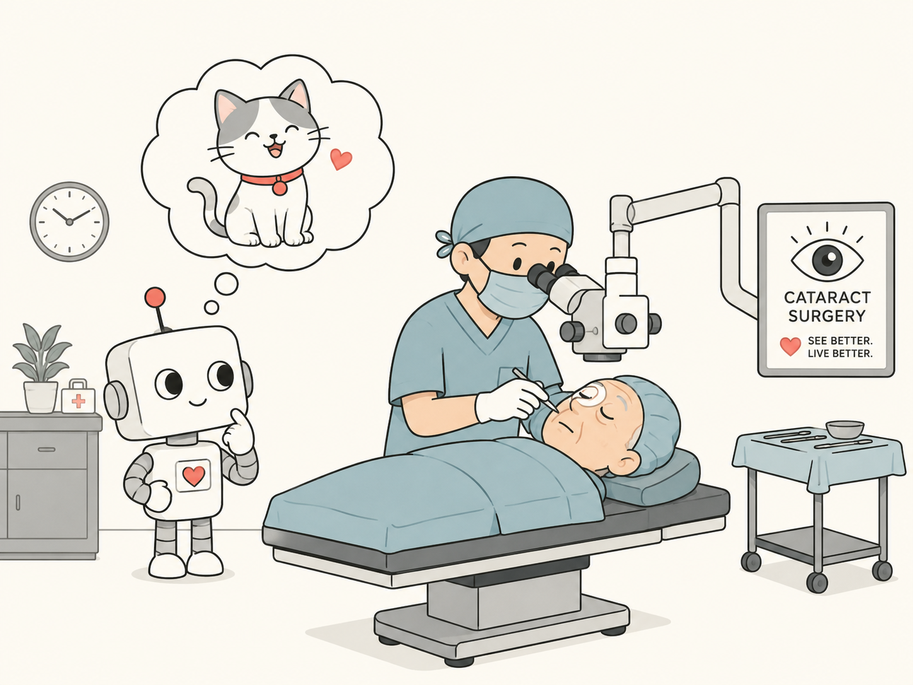

Example 1 of 4
Easy to trust.
Example 2 of 4
Useful, but incomplete.
Example 3 of 4
Do not trust yet.
Example 4 of 4
Key terms

The tool
A sparse autoencoder (SAE) takes the model's ambiguous, black-box inner values and sorts them into thousands of distinct features — each a pattern that switches on for a specific kind of text, with an auto-generated label to name it. Every row reads the same way:
The story arc
The map
How should we read it?
Example 1 of 4
Example 2 of 4
Example 3 of 4
Example 4 of 4
Zoom out
Drag to zoom out and watch how rare it is ↓
Zoom out
Auto-generated labels aren't spread evenly across the model — and a few topics, like animals, are rare.
Heatmap of label topics by GPT-2 layer. Darker cells mean a larger share of that layer. Four colored marks locate the URL, Python, cat, and Star Wars examples.
Takeaway
It read “cataracts” — an eye surgery — but the feature that lit up was labeled “cats.” What a model sees and what's in its “brain” can quietly disagree.

Why this matters
The cat/cataracts disagreement is a tiny example of a confident description that doesn't match what's really happening. Hallucination — when an LLM confidently writes something false — has the same shape, one level up. If we can't trust the labels we use to read the model's insides, we're left with a harder version of the same question on the outside: was the output really backed by what the model actually did?
The auto-generated label says "cats." The feature actually fires on "cat" inside "cataracts." The label is a confident description that the firing pattern does not support.
The LLM confidently writes a fact that isn't true. The output is a confident description that the world — or the model's own reasoning trail — does not support.
The fix is the same in both cases: don't trust a description on its own. Check it against the underlying evidence — the firing pattern for a feature, the source documents for a claim. That's what this page has been training your eye to do.
Project writeup
We built a static page that asks what an LLM is thinking about when it reads a sentence. It loads 6,000 public GPT-2 features from Neuronpedia across steps 0 to 11, with each row carrying an auto-generated label, a firing rate and 2-D coordinates for the dot map. The hook is one feature whose label says "cats" but fires on the letters c-a-t inside "cataracts," an eye-surgery word with no cats in it. A scroll story walks through four labeled features — URL, Python, cat and Star Wars — and applies the same three-part check to each: does the label match the activation text, and does the activation text match the full sentence? Supporting that story are five charts: a trust matrix, a topic heatmap, a rarity histogram, a word-match strip and the dot map. The takeaway connects the mismatch to LLM hallucination, framing both as confident descriptions that the underlying evidence does not support.
The hardest part is making sparse-autoencoder features readable for a viewer with no AI background. A feature is invisible, so the page has to build the concept before it can criticize the label, which means the first screen has to carry both the introduction and the hook at the same time. The sticky stage also has to hold four components on a laptop — verdict, evidence meters, dot map and sentence window — without the layout collapsing at smaller viewport heights. Tying the mismatch to hallucination is risky: claim it too softly and the page reads as a curiosity, claim it too strongly and it overgeneralizes from one sample, so the framing has to stay precise.